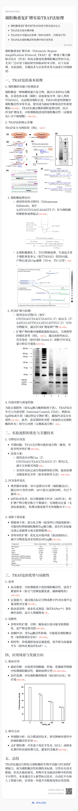

2025.04.25组会
约 667 个字
预计阅读时间 2 分钟
论文分享
本期论文：Histone lactylation drives CD8+ T cell metabolism and function
Abstarct
CD8+ T 细胞的激活和功能分化与导致乳酸产生的代谢途径有关。乳酸化是一种乳酸衍生的组蛋白翻译后修饰;然而，组蛋白乳酸化与 CD8+ T 细胞活化和功能的相关性尚不清楚。在这里，我们展示了人和小鼠 CD8+ T 细胞中 H3K18 乳酰化 （H3K18la） 和 H3K9 乳酸化 （H3K9la） 的富集，它们作为调节 CD8+ T 细胞功能的关键基因的转录起始因子。此外，我们注意到 CD8+ T 细胞亚群中 H3K18la 和 H3K9la 的不同模式与其特异性代谢特征相关。此外，我们发现在临床前模型中，通过靶向代谢和表观遗传途径调节 H3K18la 和 H3K9la 会影响 CD8+ T 细胞效应器功能，包括抗肿瘤免疫。总体而言，我们的研究揭示了 H3K18la 和 H3K9la 在 CD8+ T 细胞中的潜在作用。
学到了什么新东西
TRAP 端粒酶活性检测
感觉几句话说不清楚了，秘塔，启动！

FSC/SSC与流式细胞术
流式细胞术
流式细胞术（Flow Cytometry, FC）是用于对悬浮于流体中的微小颗粒进行计数和分选。这种技术可以用来对流过光学或电子检测器的一个个细胞进行连续的多种参数分析。
一种流式细胞术的分析方法是通过分析细胞大小和粒度来定义细胞群的特征，可以容易理解的是不同的细胞往往具有不同的大小与几何形状的特征，如果我们可以借助高通量的流式细胞术来获取细胞的大小信息，就可以快速为待测细胞样本进行细胞群水平上的分类。
- FSC：前向散射光，可以测量细胞的大小
- SSC：侧向散射光，可以测量细胞的粒度
这个技术可以做到：
- 细胞亚群分类：通过FSC和SSC双变量共同确定一个细胞的几何形状性质，FSC越大，细胞体积越大，SSC越大，细胞越接近颗粒状。
- 确定细胞活性：通过FSC与SSC双变量可以排除死细胞和细胞碎片，死细胞的特征是FSC减少但是SSC增大，细胞碎片通常FSC和SSC都很低。
- 辨别黏连细胞：FSC和SSC都包含有高度(Height)、面积(Area)和宽度(Width)三个量，可以通过FSC-H/FSC-A、FSC-H/FSC-W和SSC-H/SSC-W辨别黏连的细胞。